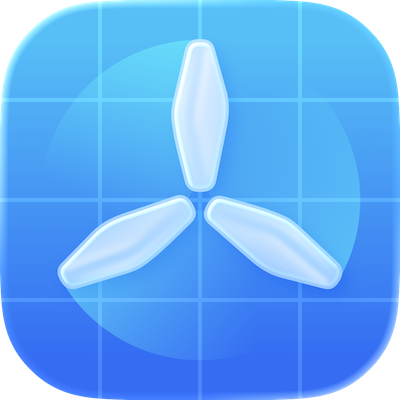

Join the Lithiometry Beta

Step 1: Get TestFlight
If you don't have it installed yet, download Apple's TestFlight app from the Mac App Store.
View in App StoreStep 2: View Lithiometry Beta
Once TestFlight is installed, click below to open the Lithiometry invitation directly in the TestFlight app.
View in TestFlight